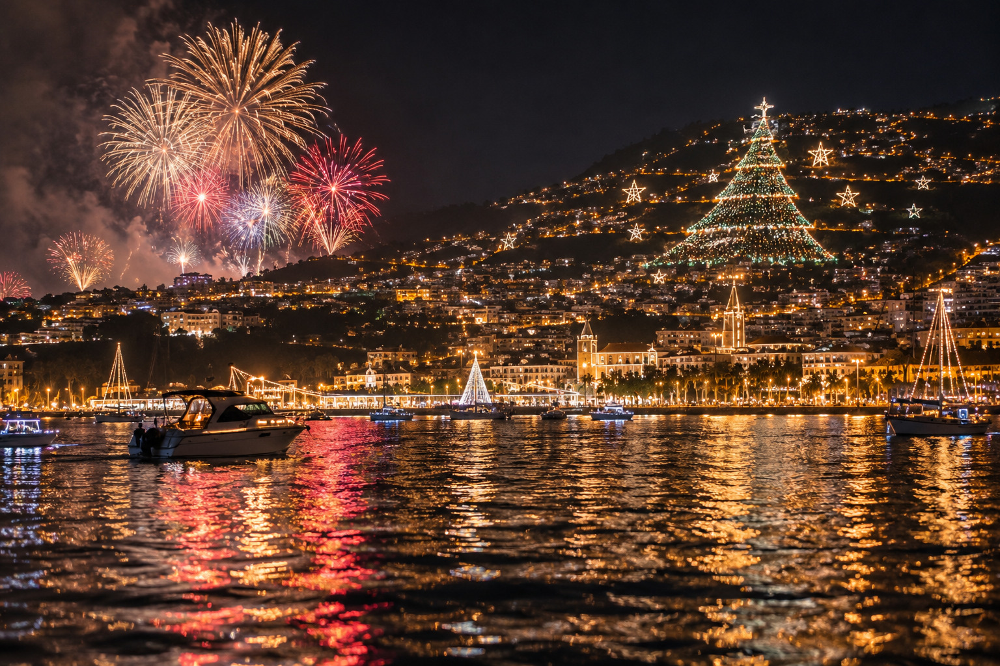

Veja o fogo de artifício da passagem de ano na Madeira no meio da baía do Funchal, num barco privado só para o seu grupo. Três horas no mar, um jantar madeirense a bordo, champanhe à meia-noite e a noite toda filmada em 360°.
À meia-noite de 31 de dezembro, o Funchal lança o fogo de artifício de fim de ano a partir de pontos à volta de toda a baía ao mesmo tempo. A cidade é um anfiteatro nas encostas, por isso o espetáculo faz um círculo completo de luz. Já foi considerado pelo Guinness World Records o maior espetáculo de fogo de artifício do mundo, e a ilha continua a viver esta noite como a maior festa do ano.
Em terra, a marginal enche logo ao início da noite e as ruas fecham. Do barco vê o círculo inteiro de uma vez, sem ninguém à frente, as cores refletidas na água e os navios no porto a tocar as buzinas à meia-noite. Só o seu grupo, dois skippers e uma mesa cheia de comida e bebida da Madeira.
Reservar a noite
Os horários seguem o relógio da meia-noite. O resto segue o vosso ritmo: mais devagar, mais tempo à mesa, mais música.
Encontro com os dois skippers na Marina do Funchal, pontão C. Mantas prontas, luzes no convés e uma primeira poncha feita à vossa frente.
Saímos da marina e seguimos devagar ao longo da marginal: as luzes de Natal a subir as encostas, os navios de cruzeiro iluminados no porto, a vossa música nas colunas.
Para oeste, até à vila piscatória iluminada para as festas. Os skippers põem o drone a voar sobre o barco, enquanto o céu ainda está calmo.
Chega a mesa madeirense: bolo do caco quente, camarão, peixe da ilha, queijo e presunto, com vinho Madeira e vinho português.
De volta à baía do Funchal. Os skippers levam o barco ao seu lugar, à distância definida pela capitania. Copos cheios, doze passas em cada mão.
Cerca de oito minutos de fogo de artifício à volta da baía, as buzinas dos navios, champanhe. A Insta360 filma o espetáculo todo, só tem de ver.
Fiquem no brilho enquanto a cidade festeja. Bolo de mel, fruta tropical, mais uma rodada.
Em terra à 01:00, no centro do Funchal, perto dos principais hotéis.
Um só preço pelo barco inteiro. Sem carta de bebidas, sem extras no fim da noite.
Só há um barco, por isso esta noite só se vende uma vez. Cancelamento grátis até 24 horas antes da partida. Se o mar ou a capitania não deixarem os barcos sair nessa noite, devolvemos tudo.
À meia-noite, de 31 de dezembro para 1 de janeiro. O espetáculo dura cerca de oito minutos e é lançado de muitos pontos à volta da baía do Funchal ao mesmo tempo, por isso a cidade inteira acende-se em círculo. Os navios no porto tocam as buzinas à meia-noite.
O fogo sobe à volta de toda a baía, por isso o melhor lugar é no meio. Em terra a marginal enche logo ao início da noite e as ruas fecham; no barco tem a vista toda, sem multidão, e os reflexos na água.
Tudo o que está nesta página: o barco inteiro durante três horas, dois skippers, um jantar madeirense no convés, champanhe à meia-noite, poncha, vinho Madeira, vinho português, cerveja e refrigerantes, o vídeo 360° Insta360 da noite, imagens de drone antes do espetáculo, fotos com máquina fotográfica e mantas. O preço é pelo barco inteiro, de 1 a 5 pessoas.
Os skippers decidem no próprio dia, pela vossa segurança. Se o mar estiver demasiado agitado ou a capitania não deixar os barcos sair, devolvemos tudo. Avisamos o mais cedo possível.
O Funchal é ameno no inverno, cerca de 15 °C à noite, mas no mar sente-se mais fresco. Traga uma camisola quente e um casaco. Há mantas a bordo.
Sim, de qualquer idade. Há coletes salva-vidas de todos os tamanhos. O barco leva 5 pessoas no total, crianças incluídas.
Sim. Diga-nos ao reservar (escrevemos-lhe no WhatsApp depois do pagamento) e adaptamos o menu e as bebidas.
Marina do Funchal, pontão C, às 21:45. Voltamos à 01:00 ao centro do Funchal, a poucos minutos a pé dos principais hotéis. Os táxis estão muito procurados na noite de fim de ano: reserve um com antecedência, ou peça-nos ajuda.
Sim, sem custos até 24 horas antes da partida.
Um barco, uma noite, um grupo: 31 de dezembro de 2026, das 22:00 à 01:00, tudo incluído.